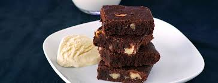

1 1/2 Barras de Mantequilla a temperatura ambiente (90 g c/u)
1 Lata de Leche Condensada
3 Huevos
1 1/2 Tazas de Harina de trigo
1 Cucharadita de Polvo para hornear
1 1/2 Barras de Chocolate semiamargo fundido (150 g c/u)
3 Envases de Media Crema (190 g c/u)
3 Barras de Chocolate semiamargo en trozos (150 g c/u)
PROCEDIMIENTO
Horno precalentado a 180 °C.
Para el pastel, acrema la mantequilla; agrega la Leche Condensada, los huevos, la harina, el polvo para hornear y 1 ½ barras de chocolate fundido.
Vierte la preparación en un molde para pastel previamente engrasado y enharinado y llena hasta ¾ partes, hornea a 180 °C por 30 a 40 minutos
o hasta que al introducir un palillo salga limpio. Retira del horno y deja enfriar.
Para el betún, calienta la Media Crema y las 3 barras de chocolate picado hasta que se funda,
retira del fuego y refrigera 2 horas o hasta que esté firme. Bate el betún en una batidora y reserva.
Desmolda el pastel y corta en tres capas. Coloca un poco de betún en la base, una tapa de pastel, betún y
la parte restante de pastel; cubre el pastel con el resto del betún, refrigera por 30 minutos y ofrece.
Pastel de chocolate
¿Como se hacen los brownies?

INGREDIENTES DE LA RECETA
200 gramos de chocolate negro
110 gramos de mantequilla
4 Huevos
120 gramos de azúcar
1 cucharada de esencia de vainilla
85 gramos de harina
bicarbonato
pepitas de chocolate al gusto
nueces al gusto
PROCEDIMIENTO
En un bol ponemos el chocolate y la mantequilla. Lo metemos al microondas a temperatura media para que se vaya derritiendo.
Una vez derretido lo lo mezclamos muy bien.
Ponemos los 4 huevos y el azúcar en un bol.
Agregamos la harina y la cucharadita de bicarbonato. Mezclamos muy bien.
Agregamos el chocolate que hemos derretido junto con la mantequilla y el toque de vainilla. Seguimos mezclando.
Agregamos las nueces y las pepitas de chocolate.
En un recipiente de horno ponemos un poco de mantequilla y harina para que no se nos pegue el brownie.
Incorporamos la mezcla y cubrimos con unas pepitas y unas nueces (opcional). Introducimos al horno durante 30-35 minutos a 180º.
Así se hacen los mochis
INGREDIENTES DE LA RECETA
125 gramos de harina de arroz glutinoso
50 gramos de azúcar
165 ml de agua fria
Fécula de maíz (solo un poco para manipular la masa)
220 gramos de nata líquida para montar
2 láminas de gelatina
2 gotas de esencia de vainilla
PROCEDIMIENTO
Sumergimos las láminas de gelatina en agua durante 5 minutos para hidratarla
Separamos 20 gramos de nata para montar y le añadimos la gelatina previamente hidratada
Con las varillas electricas (si las tenemos), montamos el resto de la nata con el azúcar y vamos añadiendo los 20 gramos de nata con la gelatina poco a poco
Vertemos esta mezcla en unos moldes semiesféricos de aproximadamente 2.5 cm de diametro
Llevamos al congelador durante mínimo 6 horas. Mientras tanto vamos haciendo la masa. Primero hacemos el relleno ya que lo necesitamos congelado
Preparación de la masa
En un bol colocamos la harina de arroz, el azúcar y el agua fría
Con ayuda de una batidora de varillas mezclamos todos los ingredientes
Cuando obtengamos una mezcla uniforme, cubrimos el bowl con papel film y le abrimos unos agujeros con un tenedor
Cocinamos la masa en el microondas durante 1 minuto a maxima potencia
Al pasar el minuto, secamos la masa, la revolvemos y la volvemos a llevar al microondas un min mas
Repetimos la operación anterior dos veces más, para completar un total de 4 rondas en el microondas
Al finalizar la cocción de la masa, la dejamos enfriar un poco y luego la enharinamos con fécula de maíz para que no se pegue a las manos al trabajarla
Tomamos porciones de 125 gramos de masa y las estiramos
Colocamos las bolitas de relleno en el centro de cada trozo de masa y luego cerramos el mochi plegando los 4 bordes hacia el centro y apretando con cuidado para que la masa no se rompa
Enharinamos la base de cada mochi, en donde quedó cerrado, con fécula de maíz para que no se pegue al colocar sobre el plato